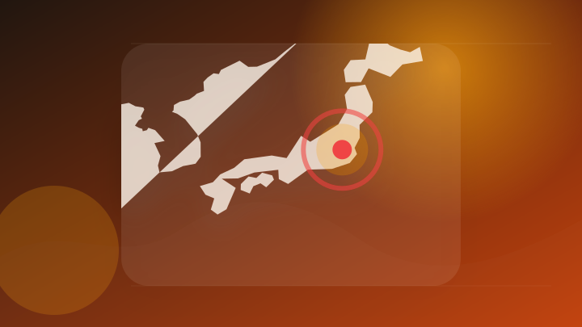
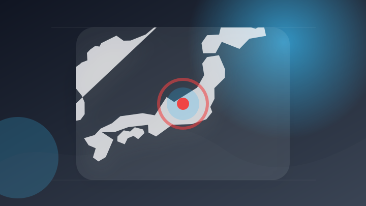
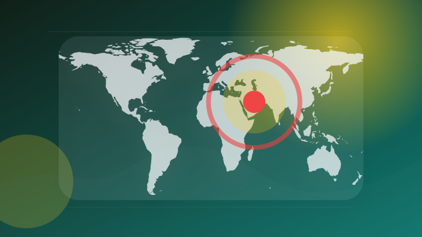
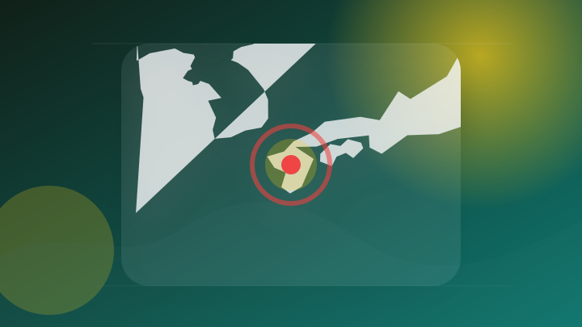
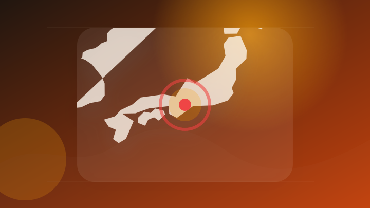
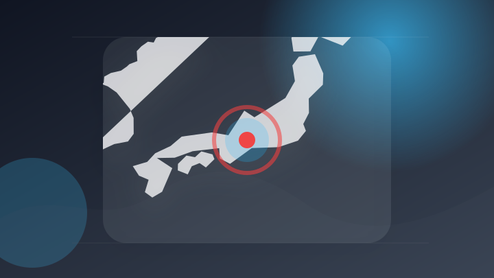
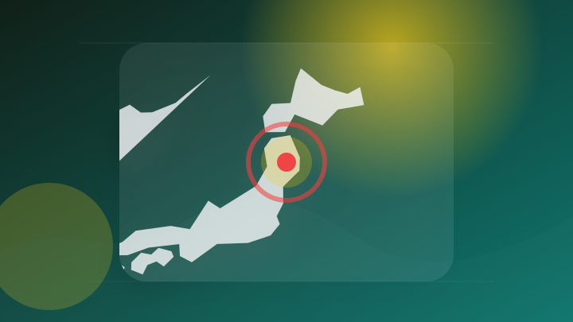
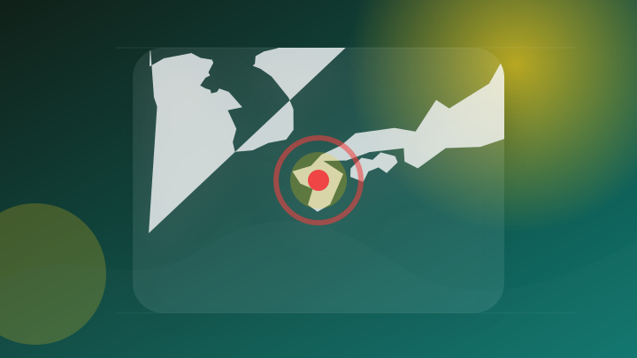

AI
6 topics
OpenAI、新モデル「Astra」の開発を一部停止 「重大」水準のサイバー攻撃能力の可能性
注目ポイント独立2媒体｜注目度 72点
生成ＡＩで体操着姿のわいせつ少女画像作成、容疑の会社員を逮捕…３００枚作成し一部ＳＮＳに投稿（読売新聞オンライン）
注目ポイント注目度 67点
トランプ大統領が警戒、AI規制はAI企業を「廃業に追い込む」のか―技術革新と安全確保をどう両立するか #エキスパートトピ
トランプ大統領が警戒、AI規制はAI企業を「廃業に追い込む」のか―技術革新と安全確保をどう両立するか #エキスパー…
注目ポイント注目度 67点
ソフトバンクG「投資利益1.8兆円」支えた、OpenAIでもArmでもない“半導体メーカー”の正体（ITmedia ビジネスオンライン）
ソフトバンクG「投資利益1.8兆円」支えた、OpenAIでもArmでもない“半導体メーカー”の正体（ITmedia…
注目ポイント独立2媒体｜注目度 66点
OpenAI、「Astra」の一部作業停止－高いサイバー能力で安全対策強化
注目ポイント注目度 64点
OpenAIの可動式AIスピーカー、価格は最大約6.3万円か 「GPT-Live」搭載の狙い
OpenAIの可動式AIスピーカー、価格は最大約6.3万円か 「GPT
注目ポイント注目度 61点
IT業界
6 topics
Google DeepMindのAI「WeatherNext」、台風予測に一日の猶予を生む｜オープンソースで無償公開
Google DeepMindのAI「WeatherNext」、台風予測に一日の猶予を生む
注目ポイント注目度 67点
有価証券報告書の中で47％の企業が「サイバー攻撃」に言及 AIがセキュリティ上の脅威に（TBS CROSS DIG with Bloomberg）
有価証券報告書の中で47％の企業が「サイバー攻撃」に言及 AIがセキュリティ上の脅威に（TBS CROSS DIG…
注目ポイント注目度 67点
有価証券報告書の中で47%の企業が「サイバー攻撃」に言及 AIがセキュリティ上の脅威に
注目ポイント注目度 67点
Apple、バグ報奨金制度を見直し AIによる脆弱性報告が急増
注目ポイント注目度 67点
Appleが下取り額を引き上げ、日本でも｜Apple Watch Ultra 2は45,000→48,000円、MacBook Proは13,000円増【2026年8月】
Appleが下取り額を引き上げ、日本でも｜Apple Watch Ultra 2は45,000→48,000円、M…
注目ポイント注目度 61点
新型SUV「CX-5」は室内にも注目！ マツダ初の「Googleビルトイン」搭載でどう変わった？ パイオニアのナビアプリ「コッチ」を使って感じた“驚き”とは（VAGUE）
新型SUV「CX-5」は室内にも注目！ マツダ初の「Googleビルトイン」搭載でどう変わった？ パイオニアのナビ…
注目ポイント注目度 61点
政治
6 topics
地震で倒壊した熊本県八代市の建物。政府は持ち回り閣議で、熊本地震を激甚災害に指定した＝7日午前 - 熊本地震を激甚災害に指定 復旧事業で国の補助拡充 農業やインフラ再建後押し - 写真・画像(1/1)
地震で倒壊した熊本県八代市の建物。政府は持ち回り閣議で、熊本地震を激甚災害に指定した＝7日午前 - 熊本地震を激甚…
注目ポイント注目度 70点
【国会報告】大野敬太郎さん（衆院・自民）「AI、造船など戦略17分野に注力」経済安全保障推進本部・本部長
注目ポイント独立2媒体｜注目度 70点
国会、大量破壊兵器拡散防止法案を討議 予防を最優先に
注目ポイント注目度 67点

首相官邸 - 成り済まし広告詐欺対策を、政府 SNS大手5社に要請 - 写真・画像(1/1)
首相官邸 - 成り済まし広告詐欺対策を、政府 SNS大手5社に要請
注目ポイント注目度 64点

長野県知事選、9日投開票 2候補が選挙戦最終日に訴えたことは
注目ポイント注目度 64点

消費減税で収入減の農家に支援を 県内の農業5団体が県選出国会議員に要請 中東情勢による農業コスト増加にも対応求める
注目ポイント注目度 64点
社会
6 topics
愛知県で水難事故相次ぐ 海・川で男性2人死亡
注目ポイント注目度 70点

熊本地震で車中泊避難していた男性宅からエアコン室外機盗んだ疑い、４７歳逮捕…「お金に困ってやった」
注目ポイント注目度 70点
学校銃乱射事件、女子生徒も死亡 死者、犯人含め９人に―タイ
注目ポイント注目度 70点

男性死亡ひき逃げ 保育士の女（57）逮捕「人にぶつかった認識ない」 静岡・沼津市（2026年8月8日掲載）｜日テレNEWS NNN
男性死亡ひき逃げ 保育士の女（57）逮捕「人にぶつかった認識ない」 静岡・沼津市（2026年8月8日掲載）
注目ポイント注目度 70点
シャインマスカット200房、畑から盗んだ疑い 岡山県警が男を逮捕 [岡山県]
注目ポイント注目度 70点

愛知県内で相次ぐ水難事故、2人が死亡 田原市の海岸、東栄町の鴨山川
注目ポイント注目度 70点
事件・事故
6 topics
路上に倒れていた男性が病院で死亡 警察がひき逃げ事件として捜査 保育士の57歳の女逮捕 「人にぶつかった認識はない」容疑を否認 静岡県警・沼津署（テレビ静岡NEWS）
路上に倒れていた男性が病院で死亡 警察がひき逃げ事件として捜査 保育士の57歳の女逮捕 「人にぶつかった認識はない…
注目ポイント独立2媒体｜注目度 72点
帰省ラッシュの中 東北道で事故 運転手の男性が死亡 | ふくしまNEWS - KFBデジタル -
帰省ラッシュの中 東北道で事故 運転手の男性が死亡 | ふくしまNEWS - KFBデジタル
注目ポイント独立2媒体｜注目度 72点
2部九州の選手が熱中症疑いで搬送後死亡 ラグビー・リーグワン
注目ポイント注目度 70点
「人にぶつかった認識ない」逮捕の女は容疑否認 沼津市で“死亡ひき逃げ事件” 警察が経緯調べる
注目ポイント注目度 67点
男性死亡 ひき逃げ疑いで女を逮捕
注目ポイント注目度 67点
エンジンかかったままのトラック盗んだ疑い、神戸の43歳男を逮捕 直後に物損事故起こす|事件・事故
エンジンかかったままのトラック盗んだ疑い、神戸の43歳男を逮捕 直後に物損事故起こす
注目ポイント注目度 67点
芸能人の結婚・離婚・交際
3 topics
【2026年最新版】結婚した女子アナウンサー一覧｜2022〜2026年の結婚・妊娠・出産まとめ
注目ポイント2022〜2026年の結婚・妊娠・出産まとめ・dressy.pla｜注目度 61点
令和8年8月8日の末広がりに、及川光博ら芸能人の結婚発表が相次ぐ (2026年8月8日掲載)
注目ポイント注目度 61点
(画像15/48) 【戸塚純貴が結婚発表】有名芸能人の結婚相次ぐ2026年 川口春奈＆板倉滉選手・田中みな実＆亀梨和也・新木優子＆中島裕翔ほか
(画像15/48) 【戸塚純貴が結婚発表】有名芸能人の結婚相次ぐ2026年 川口春奈＆板倉滉選手・田中みな実＆亀梨…
注目ポイント注目度 61点
災害
6 topics
死者39人に 新たに4人の氏名公表 2026熊本地震
注目ポイント注目度 100点

盛岡市のレベル4土砂災害危険警報は解除 | IBC NEWS | IBC岩手放送
盛岡市のレベル4土砂災害危険警報は解除 | IBC NEWS
注目ポイント注目度 70点

災害ボランティア、活動本格化 氷川町でも受け入れ始まる―知事「私たちに力を」・熊本地震
注目ポイント注目度 70点
台風１３号が沖縄本島離れ東シナ海進む…大型の台風１５号、１１日ごろにも北日本周辺上陸の可能性
注目ポイント注目度 70点
新たな【台風のたまご】熱帯低気圧２つも 次々と台風発生か？ 台風１３号は中国大陸へ １５号は東北地方へ【雨風シミュレーション１９日（水）まで／お盆休み天気予報】気象庁進路予想 気象庁予想天気図「台風情報」
新たな【台風のたまご】熱帯低気圧２つも 次々と台風発生か？ 台風１３号は中国大陸へ １５号は東北地方へ【雨風シミュ…
注目ポイント注目度 70点
台風13号 ゆっくりと西へ 5人がけが 欠航便相次ぐ
注目ポイント注目度 70点
ライフ
2 topics
ゲーム
2 topics
金融
3 topics
スポーツ
1 topics
経済
4 topics
決算プラス・インパクト銘柄 【東証プライム】 … キオクシア、村田製、イビデン (7月31日～8月6日発表分)
注目ポイント注目度 61点

日本株の決算を読み解く 2026年度の会社計画では6割強が経常増益、共通点は？ 野村證券ストラテジストが解説
注目ポイント注目度 61点
エヌビディア、好決算でも時間外で株価下落 米国株式市場への影響と今後の注目点 野村證券・村山誠
注目ポイント注目度 61点
JIAM 市町村議会議員研修 2026/8/6,7
注目ポイント選挙｜注目度 61点